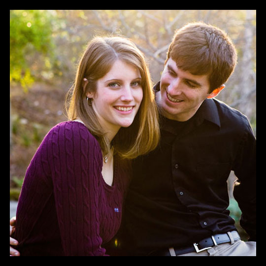

|
photo by Karl Ko

My passion is capturing the moments that tell a unique story about the magic of every couple. From the look in a groom's eye when he sees his beautiful bride revealed to the rambunctious fun of many generations gathered together on the dance floor: these are the moments to remember forever. The attention to every detail of a wedding pulls together in one day to create a perfect setting that is a photographer's dream. Wedding photography certainly is a dream job for me and I get excited about every event that I photograph. After I return from a wedding I am often awake very late looking at pictures and I spend days talking about them to whoever will listen. My love of artistry began at a very young age, was solidified at UC San Diego where I earned a degree in fine arts and has continued to develop in the six years that I have been photographing weddings.
I believe that romantic portraits of the bride and groom are the most important part of my photography work. My photographic style includes minimal direction throughout the day aimed at getting the most beautiful portraits possible. Ceremony and reception coverage is candid, as it is important to me to be subtle in my presence on your day.
I believe strongly in giving you the right to purchase your digital negatives and reprint your photos for personal use. The photos are yours to enjoy and cherish. All of our photos are taken using Canon professional digital cameras. All wedding clients have the option of purchasing a full resolution photo DVD of your wedding images. Online proofing is also included in every event so that you and your guests can easily view images and guests can order prints from your event. To guarantee that photos are ready for display, all images are touched up before being printed.
Your memories will be displayed in a custom designed digital leather-bound album. Every wedding investment comes with an initial 26 album sides. To take a look at our beautiful one of a kind wedding albums please see the Albums page. I look forward to hearing from you.
Diana Blazick
Heart Studios
Photography, Album Design
(925) 899-0446
Member, Professional Photographers of America
|
|
|